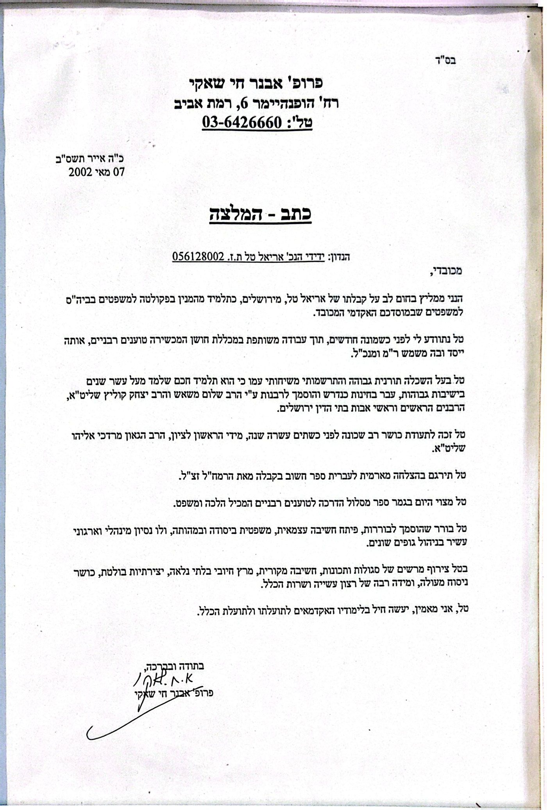
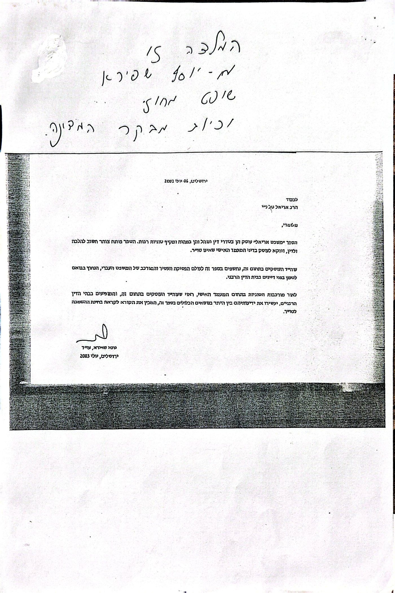
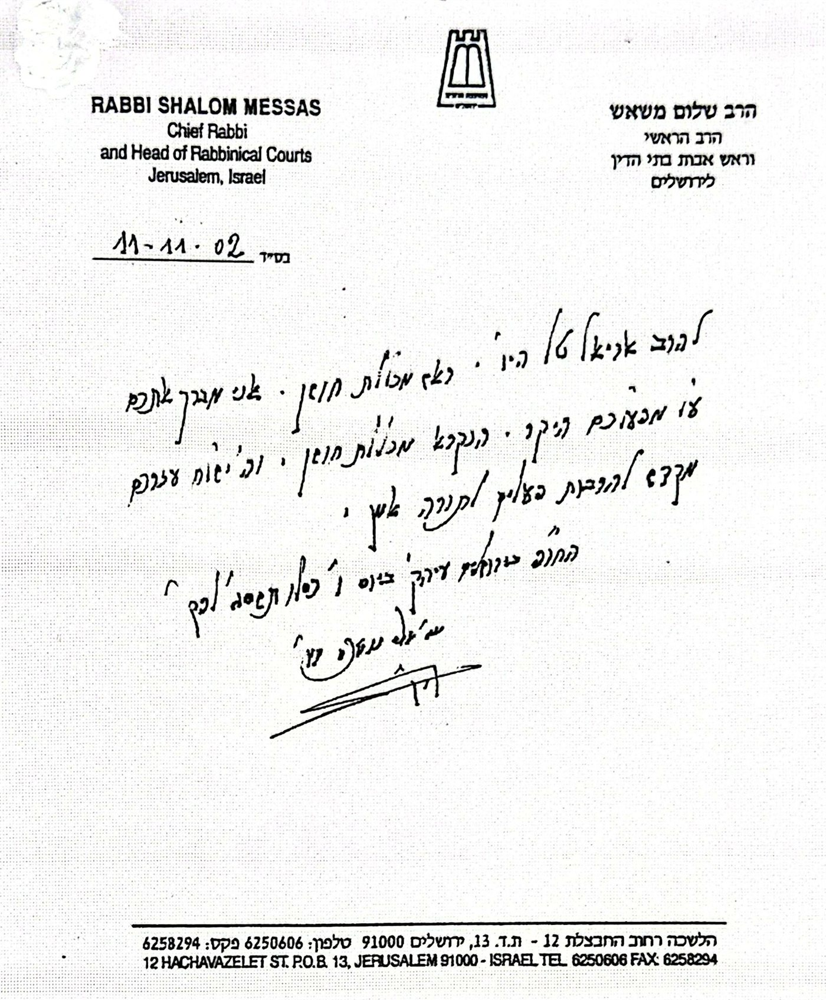
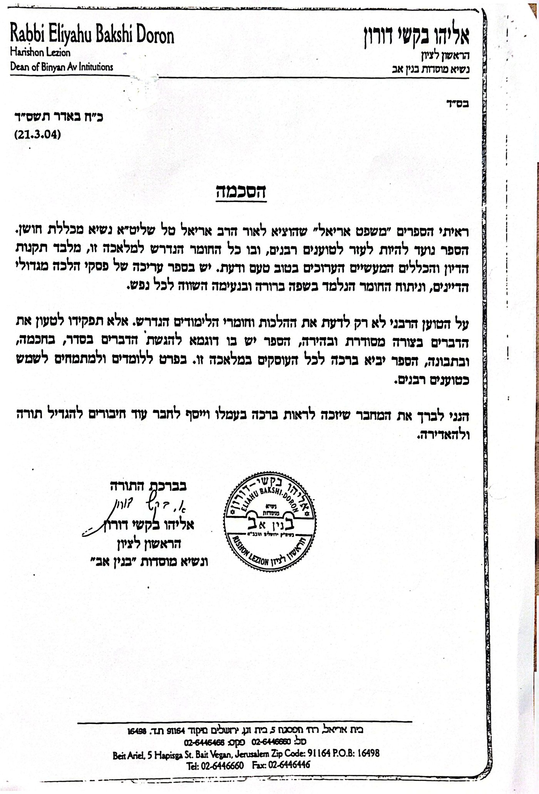
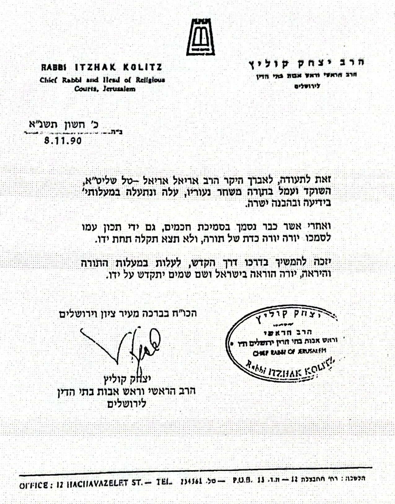
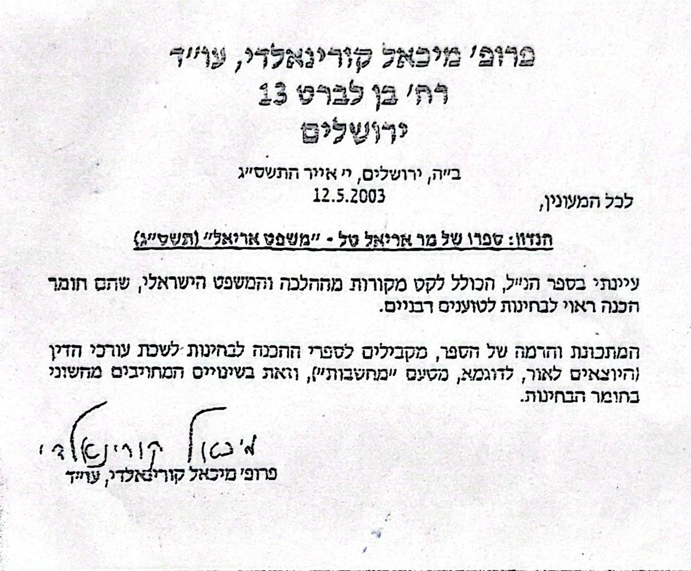

"ראיתי הספרים 'משפט אריאל' שהוציא לאור הרב אריאל טל… הספר נועד להיות לעזר לטוענים רבניים, ובו כל החומר הנדרש למלאכה זו. הספר יביא ברכה לכל העוסקים במלאכה זו."
אודות המשרד
משרד בוטיק לתיקים בעלי חשיבות ממשית
עו״ד גיל בר-זהר ואריאל טל מנהלים משרד עורכי דין בוטיק איכותי ויוקרתי, בעל ניסיון של למעלה מ־30 שנה, המעניק ייצוג משפטי אישי, יסודי ובלתי מתפשר ללקוחות המבקשים טיפול מקצועי ברמה גבוהה.
המשרד פונה ללקוחות פרטיים, בעלי נכסים, משפחות בעלות רכוש משמעותי, אנשי עסקים, בעלי חברות, מפעלים ושותפים עסקיים, הזקוקים לייצוג משפטי בתיקים מורכבים ובעלי חשיבות ממשית.
זהו אינו משרד המוני, אלא משרד בוטיק משפטי המעניק לכל לקוח יחס אישי, חשיבה אסטרטגית, דיסקרטיות מלאה וניהול מוקפד של ההליך המשפטי מתחילתו ועד סופו.
למשרד שני סניפים מרכזיים בארץ: תל אביב וירושלים, והוא מעניק שירות משפטי ללקוחות מכל רחבי הארץ.
השותף הבכיר
הרב עו״ד אריאל טל
שילוב נדיר של תורה ומשפט — יתרון ייחודי בתיקי משפחה ובתי דין רבניים
הרב עו״ד אריאל טל הוא גם רב מוסמך וגם עורך דין. שילוב זה מעניק יתרון ייחודי בתיקי בית דין רבני, דיני משפחה ומעמד אישי — היכרות עמוקה עם ההליך, השפה והרגישויות, יחד עם ידע משפטי מקצועי מלא.
הוא בעל ניסיון חיים עשיר: לימודים תורניים גבוהים בישיבת פונוביץ׳, שירות צבאי בגדוד 12 חטיבת גולני (סיירת שלדג) ולאחר מכן ביחידה מובחרת במשמר הגבול. את לימודי המשפטים החל לאחר שנים של לימוד תורני מעמיק, ובכך הביא למקצוע נקודת מבט עמוקה ומגובשת.
חבר מטעם לשכת עורכי הדין בוועדה לבית המשפט לענייני משפחה — מחוז ירושלים, וראש "המרכז להלכה ולמשפט עברי בישראל", שם הוא ממונה על עשרות מרצים בכירים — פרופסורים למשפטים, דיינים ואנשי רוח.
מומחה בתחום הנדל״ן עם ניסיון של למעלה מ־40 שנה, לרבות ביצוע עסקאות בישראל, לונדון, קנדה וקפריסין, ניהול חברות לנכסי נדל״ן והקדשים. כתב כ־200 מאמרים משפטיים וארבעה כרכי "משפט אריאל". מומחה לשפה הארמית ולשון הזוהר וסופר סת״ם.
-
תואר ראשון במשפטים (LLB)המרכז האקדמי רמת גן · 2012
-
תואר שני במשפטים (LLM)האוניברסיטה האקדמית אונו
-
תואר ראשון ביהדות ומחשבת ישראל (BA)מורה מוכר מטעם משרד החינוך
-
סמיכה רבנית "יורה ידין"מהראשון לציון הרב שלום משאש זצ״ל
-
סמיכה רבנית "יורה יורה"מהראשון לציון הרב מרדכי אליהו זצ״ל
-
תעודת בורר מוסמךמטעם מכון "חוות דעת מומחים"
-
חבר ועדת לשכת עוה״דלבית המשפט לענייני משפחה — מחוז ירושלים
-
ראש "המרכז להלכה ולמשפט עברי בישראל"ממונה על עשרות מרצים בכירים
-
סופר סת״ם · מומחה ללשון הזוהרמומחיות בתורת הנסתר, קבלה ותורת הרמח״ל
תעודות והסמכות
הסמכות מתועדות
תארים, רישיונות והסמכות — מגובים בתעודות רשמיות
חבר לשכת עורכי הדין בישראלרישיון מס׳ 93119 · משנת 2022
השכלה תורנית גבוההאישור הרבנות הראשית לישראל — מעל 10 שנים בישיבות גבוהות
השתלמות — אוניברסיטת תל אביבסוגיות בתובענות ייצוגיות · הפקולטה למשפטים, 2014
חבר ועדת בתי המשפט לענייני משפחהלשכת עורכי הדין — מחוז ירושלים, 2022
סמיכה "יורה ידין"מהראשון לציון הרב שלום משאש זצ״ל
סמיכה "יורה יורה"מהרב הראשי לירושלים הרב יצחק קוליץ זצ״ל
סריקות מקור
לחיצה על תעודה — תפתח בתצוגה מלאה
הסכמות והמלצות
מה אמרו עליו ועל ספרו
הסכמות לספר "משפט אריאל" והמלצות מבכירי עולם המשפט וההלכה
"השוקד ועמל בתורה משחר נעוריו, עלה ונתעלה במעלותיו בידיעה ובהבנה ישרה… נסמך בסמיכת חכמים, יורה יורה כדת של תורה."
"בטל צירוף מרשים של סגולות ותכונות — חשיבה מקורית, מרץ חיובי בלתי נלאה, יצירתיות בולטת, כושר ניסוח מעולה ומידה רבה של רצון עשייה ושירות הכלל."
"ספר הכולל לקט מקורות מההלכה ומהמשפט הישראלי, שהם חומר הכנה ראוי לבחינות לטוענים רבניים."
מכתבי המלצה — סריקות מקור
לחיצה — פתיחת המכתב בתצוגה מלאה

מכתב המלצה

מכתב המלצה

מכתב המלצה

מכתב המלצה

מכתב המלצה

מכתב המלצה
בין הממליצים והדמויות שליוו את דרכו
הרב הראשי לירושלים הרב שלום משאש זצ״ל
פרופ׳ מנשה דורון — מומחה למשפט פלילי
ד״ר קארין קלוו גולר — משפט צבאי בינ״ל
יוסף שפירא — שופט מחוזי ומבקר המדינה בדימוס
הרב המקובל לוי נחמני זצ״ל
פרסומים
חיבורים שכתב הרב עו״ד אריאל טל
משפט אריאל
חיבור משפטי מקיף בן ארבעה כרכים בתחום המשפט העברי. עוסק בהיבטים יסודיים של ההלכה במפגש שלה עם המשפט הישראלי המודרני.
תיקונים חדשים
תרגום ראשון מארמית לעברית של ספר ה"תיקונים החדשים" לרמח״ל — מהדורה היסטורית הפותחת לקורא העברי את אחד מספרי הקבלה החשובים.
חזון אריאל
תרגום ופירוש על אחד מספרי הקבלה של הרמח״ל — מציג את עומק תורת הסוד בשפה בהירה ונגישה.
השותף המייסד
עו״ד גיל בר-זהר
עו״ד גיל בר-זהר — שותף מייסד במשרד, עורך דין מנוסה בעל הכשרה מקצועית מקיפה. מומחה בליווי לקוחות פרטיים, בעלי עסקים ושותפים בתיקים מורכבים בעלי חשיבות כלכלית ממשית.
ערכי המשרד
איך נראה ייצוג בוטיק
יחס אישי לכל לקוח
חשיבה אסטרטגית
דיסקרטיות מלאה
ניהול מוקפד
ביטוח אחריות מקצועית
חברים בלשכת עורכי הדין
מעוניינים בייעוץ משפטי?
תיאום פגישת ייעוץ ראשונית — בה נכיר את התיק, ננתח את האפשרויות המשפטיות ונגבש מסלול פעולה אסטרטגי.
תיאום פגישה